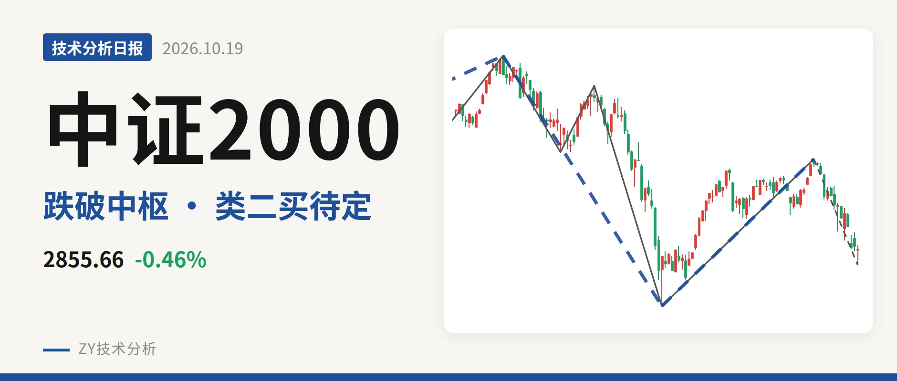
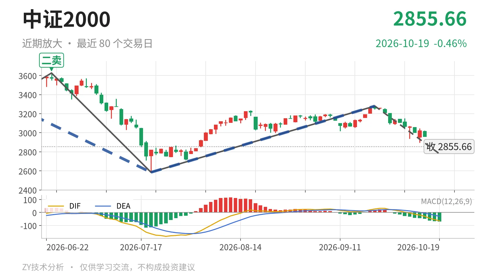

中证2000｜反抽未回下沿，2585点待定

最近日线中枢 3381.36—3593.19点，收盘位于中枢之下
一句话：5月14日以来下跌段未结束，反弹未回3381点，回落考验2585点。
📉 走势结构：5月14日以来下跌段仍延续
日线仍处在5月14日以来的下跌段中，7月21日至9月22日的反弹只有一笔，尚未构成反向线段。更大级别上，5月14日至7月21日下跌走势没有结束，当前9月22日以来的下跌笔还在延续，最低2845.73点、收盘2868.98点。5月14日一卖3768.08点与6月23日二卖3626.48点一个比一个低，说明日线上涨结构已被破坏。

🧭 中枢与位置：跌破最近中枢，反抽未回下沿
最新收盘2868.98点低于1月26日至3月23日日线笔中枢下沿3381.36点约15.2%，处于中枢下方。该中枢区间3381.36—3593.19点，7月21日反弹高点3280.29点也未能回到中枢下沿之上，反抽没有进入中枢内部。中枢由2024年11月12日至2025年6月23日的2293.12—2547.90点上移至3381.36—3593.19点，当前价格已回落至其下方。
🧿 买卖点：日线卖点逐级下移，线段类二买暂定
日线笔级别上，5月14日一卖3768.08点、6月23日二卖3626.48点，一个比一个低。线段级别7月21日类二买2585.35点是暂定的，所在下跌线段仍未走完；其后的上涨只有一笔，不构成线段，因此该买点还未被反向线段验证。当前价格仍高于2585点，若后续跌破该位，这个类二买被破坏，只对应更小级别。

⚡ 背驰：当前下跌笔力度弱于前段
9月22日以来的下跌笔未结束，绿柱面积347，小于6月23日至7月21日下跌笔的810；DIF低点由-164.2抬升至-54.9，下跌动能相对收缩。不过当前价格尚未创出2585.35点新低，还不能直接定为“新低不新弱”。若后续跌破2585点且绿柱面积、DIF低点仍弱于前段，才构成更可靠背驰；若不再跌破2585点，则更接近类二买后的回落完成。
🔍 关键位置观察
上方先看3381点附近：反抽若回不到3381点上方，结构上构成三卖；重新站上3381点，下跌更可能只是中枢扩展。下方看2585点附近，这是暂定线段类二买位置。若价格维持2585点上方，当前回落仍属类二买后的震荡；若跌破2585点，5月14日以来下跌段继续，类二买失效，下方结构参考2022年4月27日至2023年6月19日线段中枢2085.97—2437.36点。当前价格在中枢下方、反弹未成线段、下跌笔未结束，结构偏弱。
⚠️ 本文为基于公开行情数据的缠论技术结构记录，由程序自动计算并生成，仅供学习交流，不构成任何投资建议。市场有风险，投资需谨慎。